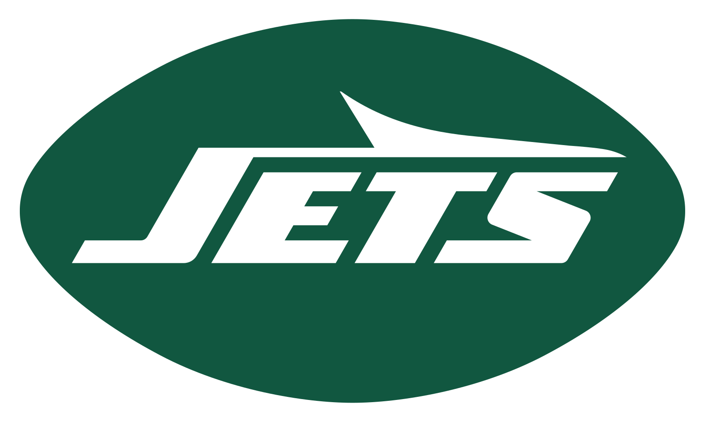
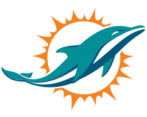

| Team | Spread | Total | ML |
|---|---|---|---|
|  NYJ | +3.5 | o45.0 | NYJ |
|  MIA | -3.5 | u45.0 | MIA |
* All stats shown are from the current season, up to but not including this game.
| NYJ | MIA | |
|---|---|---|
| Records | ||
| W/L Record | 3-5 (2-3 Away) | 3-4 (3-1 Home) |
| Against The Spread | 3-5 (1-4 Away) | 3-4 (2-2 Home) |
| Over/Under | 4-3-1 (2-3 - 0 Away) | 4-3 (3-1 Home) |
| Offense | ||
| Avg. Pass Yds | 239.38 (26th) | 246.86 (23rd) |
| Avg. Rush Yds | 110.12 (16th) | 120.0 (8th) |
| Avg. Total Yds | 349.5 (23rd) | 366.86 (17th) |
| Avg. Points | 18.75 (28th) | 20.86 (20th) |
| Defense | ||
| Avg. Pass Yds Allowed | 302.12 (31st) | 247.14 (9th) |
| Avg. Rush Yds Allowed | 74.0 (1st) | 135.57 (30th) |
| Avg. Total Yds Allowed | 376.12 (18th) | 382.71 (23rd) |
| Avg. Points Allowed | 26.0 (23rd) | 22.71 (16th) |
| NYJ | MIA | |
|---|---|---|
| Points For | ||
| Quarterback | ||
| Running Back | ||
| Wide Receiver | ||
| Tight End | ||
| D/ST | ||
| Kicker | ||
| Points Against | ||
| Quarterback | ||
| Running Back | ||
| Wide Receiver | ||
| Tight End | ||
| D/ST | ||
| Kicker |
* All stats shown are from the current season, up to but not including this game.